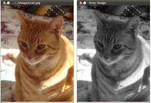

Load, Modify, and Save an Image
We assume that by now you know how to load an image using cv::imread and to display it in a window (using cv::imshow). Read the Load and Display an Image tutorial otherwise.
Goals
In this tutorial you will learn how to:
- Load an image using cv::imread
- Transform an image from BGR to Grayscale format by using cv::cvtColor
- Save your transformed image in a file on disk (using cv::imwrite)
Code
Here it is:
#include <opencv2/opencv.hpp> using namespace cv; int main( int argc, char** argv ) { char* imageName = argv[1]; Mat image; image = imread( imageName, IMREAD_COLOR ); if( argc != 2 || !image.data ) { printf( " No image data \n " ); return -1; } Mat gray_image; cvtColor( image, gray_image, COLOR_BGR2GRAY ); imwrite( "../../images/Gray_Image.jpg", gray_image ); namedWindow( imageName, WINDOW_AUTOSIZE ); namedWindow( "Gray image", WINDOW_AUTOSIZE ); imshow( imageName, image ); imshow( "Gray image", gray_image ); waitKey(0); return 0; }
Explanation
We begin by loading an image using cv::imread, located in the path given by imageName. For this example, assume you are loading a BGR image.
Now we are going to convert our image from BGR to Grayscale format. OpenCV has a really nice function to do this kind of transformations:
cvtColor( image, gray_image, COLOR_BGR2GRAY );
As you can see, cv::cvtColor takes as arguments:
- a source image (image)
- a destination image (gray_image), in which we will save the converted image.
- an additional parameter that indicates what kind of transformation will be performed. In this case we use COLOR_BGR2GRAY (because of cv::imread has BGR default channel order in case of color images).
So now we have our new gray_image and want to save it on disk (otherwise it will get lost after the program ends). To save it, we will use a function analagous to cv::imread : cv::imwrite
imwrite( "../../images/Gray_Image.jpg", gray_image );
Which will save our gray_image as Gray_Image.jpg in the folder images located two levels up of my current location.
Finally, let’s check out the images. We create two windows and use them to show the original image as well as the new one:
namedWindow( imageName, WINDOW_AUTOSIZE ); namedWindow( "Gray image", WINDOW_AUTOSIZE ); imshow( imageName, image ); imshow( "Gray image", gray_image );
Add the waitKey(0) function call for the program to wait forever for an user key press.
Result
When you run your program you should get something like this:
And if you check in your folder (in my case images), you should have a newly .jpg file named Gray_Image.jpg :
Congratulations, you are done with this tutorial!